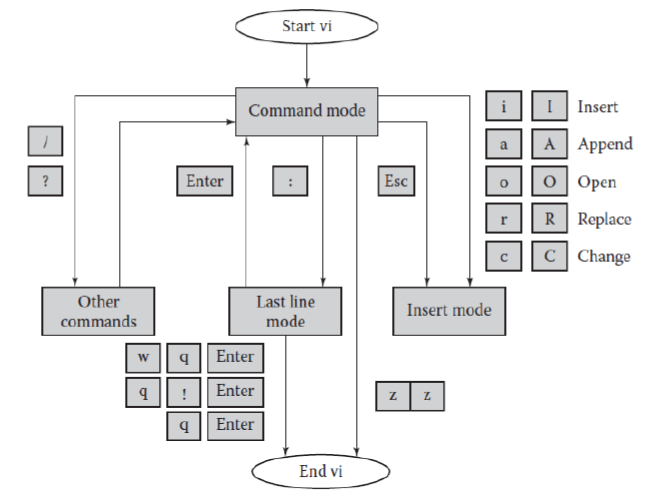
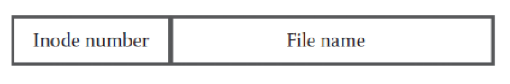

Unix 筆記
Ch1
OS是什麼?
電腦系統:app,software
lib,system calls,program generation tool
fairness
- single user:Doesn’t matter
- multi:資源分配，security
Layer
| Users |
|---|
| AUI:Unix shell,commands,app |
| API:Language libs,system call |
| OS Kernel |
| Hardware |
Top down View
- a software handle all hardware resource
- no needs to worry about low-level things
- ex:
cp memo letter- no needs to worry:
- the location of the file on the hard disk
- size of disk,brand of disk…
Bottom up View
- a software (de)allocates all system resource
- ex:
- only one file can be printed by a printer
- preventing from overrides others’ files on disk
OS Services
- resource manager
- provides many read-made services
GUI V.S. CLI
| GUI | CLI(CUI) |
|---|---|
| Most OS have both | Most OS have both |
| Win,Mac OS… primarily offered | Can enter by terminal screen |
| easy to use | flexiablity |
user and process categorize
- Single-user,Single-process
- one process at a time
- ex: early Mac OS,DOS,Win
- Single-user,Multi-process
- ex: OS/2 Win XP Workstation,batch OS
- Multi-user,Multi-process
- ex: Unix,Linux,Win NT(Server),VM
- increased system throughput
- multiprogramming
For each type of OS:
- single-process system:
- use all power
- Interactive
- allow users to interact with their executing prog.
- Batch os
- useful when programs are run without human’s instruction
- Almost all os are interactive
Unix allow programs run in batch mode.
- Time-sharing system
- multiuser+multiprocess+interactive
Ch2
各種指令來啦!
cat- conncatenate
- 創建新檔、瀏覽檔案…
cat > myfileThis is ......(一些文字)<Ctrl+D>
more- 顯示檔案內容
more myfile
cp- copy
cp myfile myfile2
mv- move
- 可以用來重新命名
mv myfile2 renamed_filemv myfile ..
不要亂用空白當檔名
mv "the file has space.txt" file.txtrm- remove
rm renamed_filerm -r(recursivly remove)
ls- list
- 顯示所有檔案
ls -la含詳細資訊ls -la myfile
mkdir- make directory
- 建立資料夾
mkdir first
cdcd first
pwd- 顯示現在的資料夾
rmdir- remove directory
rmdir first
man- 線上找尋指令說明
man -k：關鍵字找尋man -S2：找特定section
whatiswhereiswhoamihostnamelprlpr -Pspr order.eps
calcal 4 2020
writewrite username [terminal]
whomesgmesg y/n同意傳訊
biffbiff y/nemail訊息通知
aliasalias [name [=string]]：bsh,ksh,bashalias [name [string]]：csh- in .profile or .login
- .bashrc for bash in Solaris
- .cshrc for csh in BSD
pipeline
alias ls -more 'ls \!*|more'meansls-more /etc/usr == ls /etc/usr | morealias ls-more 'ls|more'meansls-more /etc/usr == ls|more /etc/usr
unalias
Shell
- 檢查安裝的shell
- echo $SHELL
- system start-up file
- .profile in Solaris
- .login in BSD
- shell start-up file
- .cshrc
- .bashrc
sudosu
Ch3
vi
一般編輯
vi file1A- 打字
- 按
<esc> - 打
:wq即可退出vi
vi 的一些特點：
- 有模式之分：insert mode and command mode
- 通常vi,vim,gvim都內附在系統中了
寫Shell Script
- 就是連續執行很多指令而已
sh scriptfile
vi 架構

command
- 標準語法為：
[#1] operation [#2] target
#1,#2為選擇性輸入，#1為次數，#2為影響target個數 dd：刪除整行cw：change current wordcc：change lineCorc$：change text from now to end of line7 dd：del 7 linesd/ pat：del up to first patternr x：replace the current text to xR text：replace begin at cursors：substituteu：undox：del
- 標準語法為：
last line mode command
:n,m w filen到m行寫入:n,m w >> filen到m行加入:wq:w[!] [filename]:w %.new%代表原檔案名:q[!]
move cursor with h,j,k,l,(上下左右)
cursor moving
1G移動到第一行G移到最後一行0相當於home鍵<ctrl+g>游標在檔案的位置訊息$相當於end鍵w往前b往後
copy and paste
- yank and put
y2Wyank two words4ybyank 4 words backwardyyyank whole lineye複製到行底yw複製到行底＋空白pput afterPput beforeJ插入一行
substitute
- Search and Replace
:[range]s/pattern/string[/options][count]
vim
- vim設定檔
~/.vimrc :split [filename]可以分割視窗<ctrl+w> Up移動到上方視窗- undo：
3uundo 3次 <ctrl+R>：redo
- vim設定檔
Ch4：file system
- Unix 把所有東西都視為檔案
- NIC,hard disk,USB,keboard,printer,傳統檔案…
- Unix 的七種檔案類型
- Simple/ordinary file
- Dir
- Symbolic link(類似Windows的捷徑)
- Character special file
- Block special file
- Named pipe (FIFO)
- Socket
- 強烈建議不要使用空白當檔名
- file extensions mean nothing to Unix system
Directory
資料夾基本架構

inode number is 4 bytes long,as index for an array on the disk
每個檔案都有自己的inode
Link File
- Points to an exsiting file
Special(or Device) File
- Used to access hardware devices
- Each hardware is associated with at least one spcial file
- two type
- Charater special files
- 和字元裝置有關，如鍵盤
- Block special files
- 和區塊裝置有關，如硬碟
- Charater special files
- 讓應用程式能以跟存取檔案相同的方法存取裝置
- 也有一些模擬物理裝置的出現(psedodevices)，讓我們可以從遠端登入到系統(模擬鍵盤、滑鼠等)
Named Pipe(FIFO)
- Unix 中有一些工具可以讓程序之間溝通
- pipe 就是kernal memory中可以讓程序間溝通的地方
Socket
計網講過了
- process communicate through network
- ex : App layer such as HTTP use socket for communication
AF_INET: internet domain socketAF_UNIX: same machine under Unix , called Unix domain socket
標準資料夾介紹
Root(/)
- top of the file system
/bin
- store most Unix programs or commands
- On BSD,
/usr/binis diff from /bin - On Solaris , they are linked.
/boot
- 開機相關檔案，很重要
/dev
- 各種裝置
/etc
- 通常存放系統管理或設置scripts or file
/lib
- 程式語言的library
/tmp
- 暫存檔，不解釋
/usr
- utilies,system deamons,app,programming tool,standard c lib,language lib,manual page…
- /usr/bin
- /usr/lib
/usr/home
- hold all user’s home directories
- 子資料夾可以用來分types
- for example ：
/usr/home/admin,/usr/home/faculty,/usr/home/students - 有些系統會鍵一個link：
/home -> /usr/home - 在Ubuntu 18.04下，已經沒有
/usr/home了，直接移入/而成/home
/var
- contains log,temporary,spool files
/var/mailmay contains the mails you have recived/var/spool/mqueuecontains undelivered mail queue/var/spool/outputcontains the line printer spooling dir/var/tmpkeep temp files kept between system reboots
/etc/passwd
- contain every user on the system